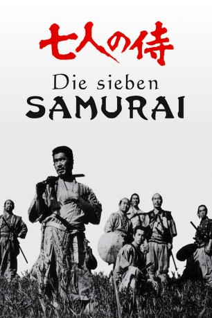

#1421 Die Sieben Samurai
Alternativ: Seven Samurai (Englischer Titel)
Auszeichnungen: für 2 Oscars nominiert
 
 IMDB-Wertung: 8.7 / 10
IMDB-Wertung: 8.7 / 10  IMDB-TOP-Platzierung: 20
IMDB-TOP-Platzierung: 20  Metascore: 98
Metascore: 98 
Japan im 16. Jahrhundert. Einmal im Jahr fällt eine Räuberbande in abgelegenes Provinznest ein und klaut den dort ansäßigen Bauern alle Vorräte und Wertsachen. Um dem Einhalt zu gebieten, wenden sich diese hilfesuchend an umhervagabundierende Samurai. Sieben Wanderkrieger entschließen sich aus unterschiedlichsten Motiven, den Landwirten beizustehen. Gemeinsam machen sie sich daran, das Dorf in eine Festung und die Agronomen in Hilfssoldaten umzurüsten, und schließlich weicht auch ihre ursprüngliche Söldnermentalität einem aufrichtigen Gefühl der Solidarität.
Jahr: 1954
Dauer: 207 Minuten
FSK: 16
Land: Japan Studio: trigon-filmTonspuren: DD1.0 - ,
Untertitel: Deutsch, Englisch,
Auflösung: 720p (964x720) Größe: 7649 MB
Genre: Drama
Regisseur:  Akira Kurosawa
Akira Kurosawa
Drehbuch: Akira Kurosawa, Shinobu Hashimoto, Hideo Oguni
Soundtrack: Fumio Hayasaka
Darsteller:
 Toshirô Mifune als Kikuchiyo
Toshirô Mifune als Kikuchiyo Takashi Shimura als Kambei Shimada
Takashi Shimura als Kambei Shimada- Haruo Nakajima als Bandit
 Tatsuya Nakadai als Samurai Wandering Through Town , uncredited
Tatsuya Nakadai als Samurai Wandering Through Town , uncredited- Keiko Tsushima als Shino
- Yukiko Shimazaki als Wife
- Kamatari Fujiwara als Farmer Manzo
- Daisuke Katô als Shichiroji
- Isao Kimura als Katsushiro
- Minoru Chiaki als Heihachi
- Seiji Miyaguchi als Kyuzo
- Yoshio Kosugi als Farmer Mosuke
- Bokuzen Hidari als Farmer Yohei
- Yoshio Inaba als Gorobei Katayama
- Yoshio Tsuchiya als Farmer Rikichi
- Kokuten Kôdô als Old Man Gisaku
- Eijirô Tôno als Thief
- Kichijirô Ueda als Bandit Scout
- Jun Tatara als Coolie A
- Atsushi Watanabe als Bun Seller
- Toranosuke Ogawa als Grandfather of Kidnapped Girl
- Isao Yamagata als Samurai
- Sôjin Kamiyama als Blind Player
- Gen Shimizu als Samurai Who Kicks Farmers
- Keiji Sakakida als Gosaku
- Shinpei Takagi als Bandit Chieftain
- Shin Ôtomo als Bandit Second-in-Command
- Toshio Takahara als Samurai with Gun
- Hiroshi Sugi als Tea Shop Owner
- Hiroshi Hayashi als Weak Ronin
- Sachio Sakai als 2nd Coolie
- Sôkichi Maki als Strong-Looking Samurai
- Ichirô Chiba als Buddhist Priest
- Noriko Sengoku als Wife of Gono Family
- Noriko Honma als Woman Farmer
- Masanobu Ôkubo als Samurai
- Etsuo Saijô als Bandit
- Minoru Itô als Samurai
- Haruya Sakamoto als Samurai
- Gorô Sakurai als Samurai
- Hideo Shibuya als Bandit
- Kiyoshi Kamoda als Samurai
- Senkichi Ômura als Bandit Who Escapes
- Takashi Narita als Bandit Who Escapes
- Shôichi Hirose als Bandit
- Kôji Uno als Bandit
- Masaaki Tachibana als Bandit
- Kamayuki Tsubono als Bandit
- Taiji Naka als Bandit
- Chindanji Miyagawa als Bandit
Datei: X:\HD-Eastern-Classic(N-Z)\Sieben Samurai, Die (1954, FSK16, 964x720).mkv seit 01.07.2015
Festplatte: HD Eastern+Western
 Es gibt insgesamt 61 Filme in der Gruppe 'HD-Eastern-Classic(N-Z)'
Es gibt insgesamt 61 Filme in der Gruppe 'HD-Eastern-Classic(N-Z)'